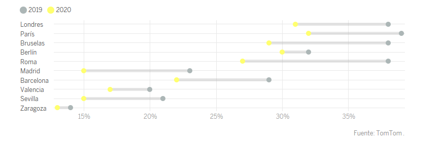

Actividad Dirigida 1
Primer ejemplo:
La visualización elegida consta de una infografía publicada en feique, Federación Empresarial de la Industria Química Española (consulta la infografía aquí)

La infografía está dividida en 4 puntos fundamentales: economía, comercio exterior, empleo e innovación. Los dibujos elegidos en cada uno de los apartados son adecuados, quitando el de economía en el que yo hubiese puesto una entidad como un banco o personas intercambiando dinero. Comercio exterior porque pone el planeta tierra, empleo porque pone a dos personas haciendo una entrevista e innovación porque pone unos frascos que suelen estar relacionados con la ciencia. Los colores usados de economía y comercio exterior son muy parecidos y pueden llegar a generar confusión. También llama la atención que en todas las secciones tienen cada una de ellas 4 estadísticas, menos la de Comercio Exterior que le da una sensación de pobreza. Además, todas las secciones tienen un fondo claro que combina con el color en el que están escritas. En el caso de economía, escrito en azul, tiene un fondo azul claro, el único inconveniente es que es demasiado claro y es difícil de distinguirlo del blanco de fondo. No llama la atención tanto como debería.
Segundo ejemplo:
En el caso del reportaje publicado en El País a día 30 de mayo de 2021, con el nombre de “El “shock” de las ciudades en 15 gráficos La primera visualización que quiero resaltar y resulta bastante llamativa es el anterior gráfico interactivo, que representa con puntos amarillos las estadísticas de cada ciudad en 2020, y en puntos grises la de 2019. Lo interesante es que lo expresan mediante líneas horizontales, por ese motivo, son más fáciles de ver las variaciones de un año a otro. 
La segunda visualización consta de otro gráfico interactivo, esta vez un gráfico de líneas o line chart, lo más destacable es su interactividad, debido a que al pasar el ratón por encima destaca respecto a las otras la ciudad de la que se está hablando y señala exactamente la fecha temporal en la que ocurre. Como los valores tienen mucha variación temporal, son muy intuitivos. Y este mismo gráfico, pero con distintos datos se repite a lo largo de todo el reportaje.